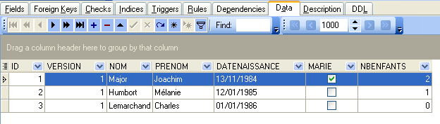
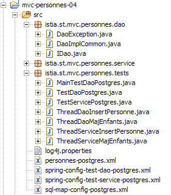
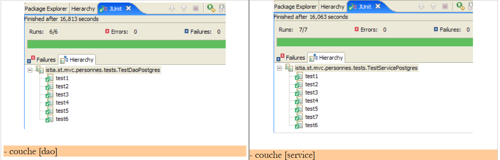
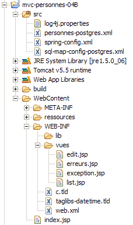
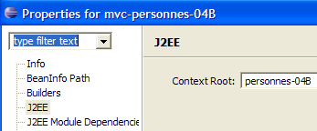
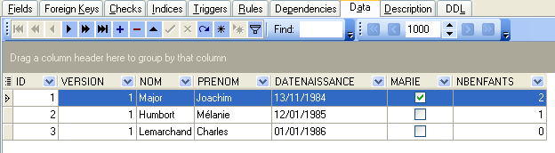
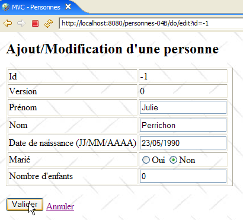
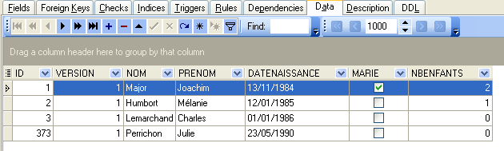

18. MVC web application in a 3-tier architecture – Example 4, Postgres
18.1. The Postgres database
In this version, we will store the list of people in a Postgres 8.x database table [http://www.postgres.org]. The following screenshots are from the EMS PostgreSQL Manager Lite [http://www.sqlmanager.net/fr/products/postgresql/manager] client, a free Postgres administration client.
The database is named [dbpersonnes]. It contains a table named [PERSONNES]:

The [PERSONNES] table will contain the list of people managed by the web application. It was created using the following SQL commands:
We will not dwell on this table, which is analogous to the Firebird table [PERSONNES] discussed earlier. Note, however, that the column and table names are enclosed in quotes. Furthermore, these names are case-sensitive. It is possible that this behavior in Postgres 8.x is configurable. I have not investigated this further.
The table [PERSONNES] could have the following content:

In addition to the table [PERSONNES], the database [dbpersonnes] contains an object called a sequence named [SEQ_ID]. This generator produces successive integers that we will use to assign a value to the primary key [ID] of the class [PERSONNES]. Let’s look at an example to illustrate how it works:
 |
 |
We can see that the value [Next value] of the sequence [SEQ_ID] has changed (double-click on it + F5 to refresh):
 |
The order SQL
therefore provides the next value in the sequence: [SEQ_ID]. We will use this in the file [personnes-postgres.xml], which collects the orders SQL issued on SGBD.
18.2. The Eclipse project for layers [dao] and [service]
To develop the [dao] and [service] layers of our application with the Postgres 8.x database, we will use the following Eclipse project [spring-mvc-39]:

The project is a simple Java project, not a Tomcat web project.
Folder [src]
This folder contains the source code for the [dao] and [service] layers:

All files with [postgres] in their names may or may not have been modified compared to the version Firebird version. Below, we describe the modified files.
Folder [database]
This folder contains the script for creating the Postgres database for people:

Folder [lib]
This folder contains the archives required by the application:
 |
Note the presence of the SGBD Postgres 8.x JDBC driver. All these files are part of the Eclipse project's classpath.
18.3. The [dao] layer
The [dao] layer is as follows:

We are only presenting the changes relative to version and [Firebird].
The [personne-postgres.xml] mapping file is as follows:
<?xml version="1.0" encoding="UTF-8" ?>
<!DOCTYPE sqlMap
PUBLIC "-//iBATIS.com//DTD SQL Map 2.0//EN"
"http://www.ibatis.com/dtd/sql-map-2.dtd">
<!-- warning - Postgresql 8 requires exact spelling of column names
et des tables ainsi que des guillemets autour de ces noms -->
<sqlMap>
<!-- alias class [Person] -->
<typeAlias alias="Personne.classe"
type="istia.st.mvc.personnes.entites.Personne"/>
<!-- mapping table [PERSONNES] - object [Person] -->
<resultMap id="Personne.map"
class="istia.st.mvc.personnes.entites.Personne">
<result property="id" column="ID" />
<result property="version" column="VERSION" />
<result property="nom" column="NOM"/>
<result property="prenom" column="PRENOM"/>
<result property="dateNaissance" column="DATENAISSANCE"/>
<result property="marie" column="MARIE"/>
<result property="nbEnfants" column="NBENFANTS"/>
</resultMap>
<!-- list of all persons -->
<select id="Personne.getAll" resultMap="Personne.map" > select "ID",
"VERSION", "NOM", "PRENOM", "DATENAISSANCE", "MARIE", "NBENFANTS" FROM
"PERSONNES"</select>
<!-- get a specific person -->
<select id="Personne.getOne" resultMap="Personne.map" >select "ID",
"VERSION", "NOM", "PRENOM", "DATENAISSANCE", "MARIE", "NBENFANTS" FROM
"PERSONNES" WHERE "ID"=#value#</select>
<!-- add a person -->
<insert id="Personne.insertOne" parameterClass="Personne.classe">
<selectKey keyProperty="id">
SELECT nextval('"SEQ_ID"') as value
</selectKey>
insert into "PERSONNES"("ID", "VERSION",
"NOM", "PRENOM", "DATENAISSANCE", "MARIE", "NBENFANTS") VALUES(#id#,
#version#, #nom#, #prenom#, #dateNaissance#, #marie#, #nbEnfants#)
</insert>
<!-- update a person -->
<update id="Personne.updateOne" parameterClass="Personne.classe"> update
"PERSONNES" set "VERSION"=#version#+1, "NOM"=#nom#, "PRENOM"=#prenom#,
"DATENAISSANCE"=#dateNaissance#, "MARIE"=#marie#, "NBENFANTS"=#nbEnfants#
WHERE "ID"=#id# and "VERSION"=#version#</update>
<!-- delete a person -->
<delete id="Personne.deleteOne" parameterClass="int"> delete FROM
"PERSONNES" WHERE "ID"=#value# </delete>
</sqlMap>
This is the same content as [personnes-firebird.xml], with the following minor differences:
- column and table names are enclosed in quotes and are case-sensitive
- the order SQL " Personne.insertOne " has changed in lines 34–41. The way the primary key is generated with Postgres differs from that used with Firebird:
- line 36: the order SQL [SELECT nextval('"SEQ_ID"')] provides the primary key. The syntax [as value] is mandatory. [value] represents the resulting key. This value will be assigned to the field of the [Personne] object designated by the [keyProperty] attribute (line 35), in this case the [id] field.
- The SQL commands within the <insert> tag are executed in the order in which they are encountered. Therefore, SELECT is executed before INSERT. At the time of the insertion operation, the field [id] of the object [Personne] will therefore have been updated by the command SQL SELECT.
- Lines 38–40: Insertion of object [Personne]
The implementation class [DaoImplCommon] of layer [dao] is the one examined in version and [Firebird].
The configuration of the [dao] layer has been adapted to SGBD and [Postgres]. Thus, the configuration file [spring-config-test-dao-postgres.xml] is as follows:
<?xml version="1.0" encoding="ISO_8859-1"?>
<!DOCTYPE beans SYSTEM "http://www.springframework.org/dtd/spring-beans.dtd">
<beans>
<!-- data source DBCP -->
<bean id="dataSource" class="org.apache.commons.dbcp.BasicDataSource"
destroy-method="close">
<property name="driverClassName">
<value>org.postgresql.Driver</value>
</property>
<property name="url">
<value>jdbc:postgresql:dbpersonnes</value>
</property>
<property name="username">
<value>postgres</value>
</property>
<property name="password">
<value>postgres</value>
</property>
</bean>
<!-- SqlMapCllient -->
<bean id="sqlMapClient"
class="org.springframework.orm.ibatis.SqlMapClientFactoryBean">
<property name="dataSource">
<ref local="dataSource"/>
</property>
<property name="configLocation">
<value>classpath:sql-map-config-postgres.xml</value>
</property>
</bean>
<!-- layer access classes [dao] -->
<bean id="dao" class="istia.st.mvc.personnes.dao.DaoImplCommon">
<property name="sqlMapClient">
<ref local="sqlMapClient"/>
</property>
</bean>
</beans>
- lines 5–19: The bean [dataSource] now refers to the database [Postgres] [dbpersonnes], whose administrator is [postgres] with the password [postgres]. The reader should modify this configuration according to their own environment.
- Line 31: The class [DaoImplCommon] is the implementation class for the [dao] layer
With these changes made, we can proceed to testing.
18.4. Tests for the [dao] and [service] layers
The tests for the [dao] and [service] layers are the same as for version and [Firebird]. Let’s run the SGBD Postgres test followed by the Eclipse tests. The results are as follows:
 |
We can see that the tests passed successfully with the [DaoImplCommon] implementation. We will not need to derive this class as we had to do with SGBD and [Firebird].
18.5. Testing the [web] application
To test the web application with SGBD and [Postgres], we build an Eclipse project [mvc-personnes-04B] in a manner similar to that used to build the [mvc-personnes-03B] project with the Firebird database (see Section 17.7). However, we do not need to recreate the [personnes-dao.jar] and [personnes-service.jar] archives. In fact, we have not modified any classes relative to the [mvc-personnes-03B] project. The [personnes-dao.jar] archive simply contains the [DaoImplFirebird] class, which is no longer needed.

We deploy the web project [mvc-personnes-04B] within Tomcat:
 |  |
We are ready for test s. The contents of the [PERSONNES] table are then as follows:

Tomcat is running. Using a browser, we request the url and [http://localhost:8080/mvc-personnes-04B] pages:

We add a new person using the link [Ajout]:
 |  |
We verify the addition in the database:

The reader is invited to perform further tests [modification, suppression].